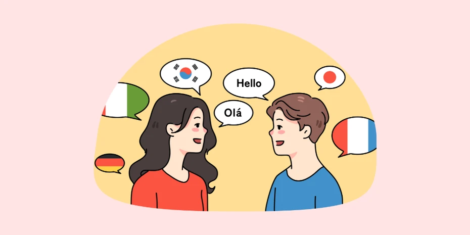

Hello, this is Yi
IT Postgraduate | Former Strategy Manager at Unilever | PMP | Cross-cultural Practitioner
I am currently pursuing a Master’s degree in IT at UNSW, having transitioned into the AI field from a different background. I have a strong interest in data science, web development, and project management.
I enjoy sharing knowledge, love sports and animals, and am actively exploring the intersection of digital transformation and product design.
❤️ Love for Animals
I enjoy spending time with pets and have cared for both cats and dogs.
🌠Love for Travel
I’ve traveled extensively and enjoy exploring new cultures and landscapes.
🬠Movie Enthusiast
I’m a fan of mystery and thriller films – the more suspense, the better!

🗣️ Multilingual
I speak Chinese, English, German, and French fluently.
📧 z5536562@ad.unsw.edu.au |
💼 GitHub